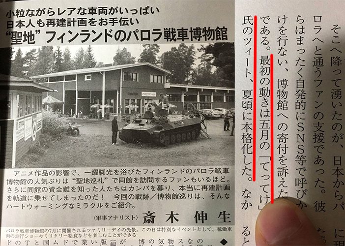
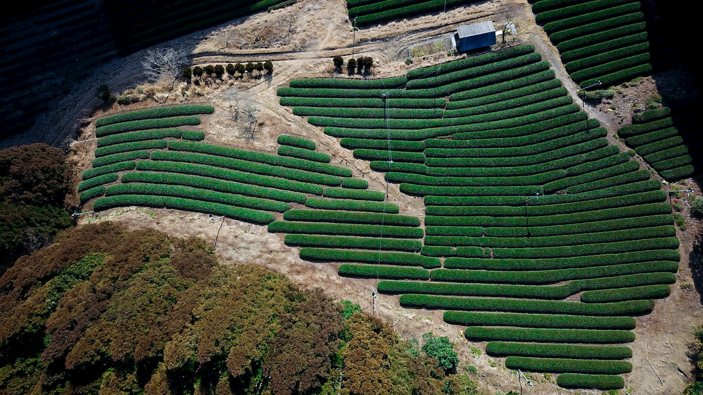
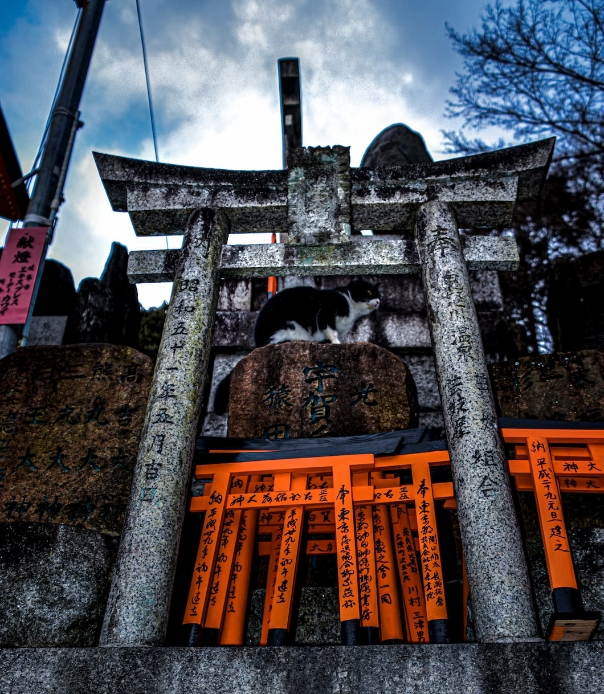

Creating
Gallery

パロラ戦車博物館の再建に寄与
なんじゃこれ
「愛しい対象の護り方」のOPパロです．
ロゴなんかは頑張って元ネタと似るよう手作りしました.
Type 10 Tank Open Fire
2018 Super Moon

Tea plantation in Wazuka
Roofing at Shokaku-ji Temple

Neko?
Type 16 mobile combat vehicle Open Fire
landing!

Minesweeper

Blue Impulse in Heijo Palace